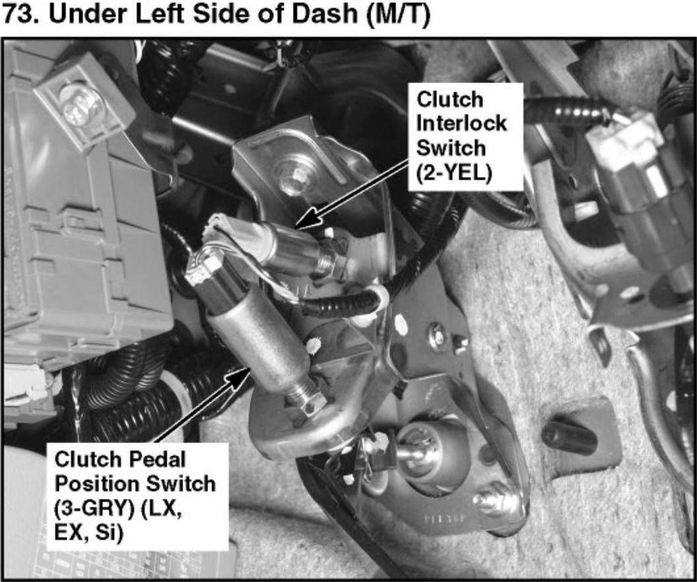
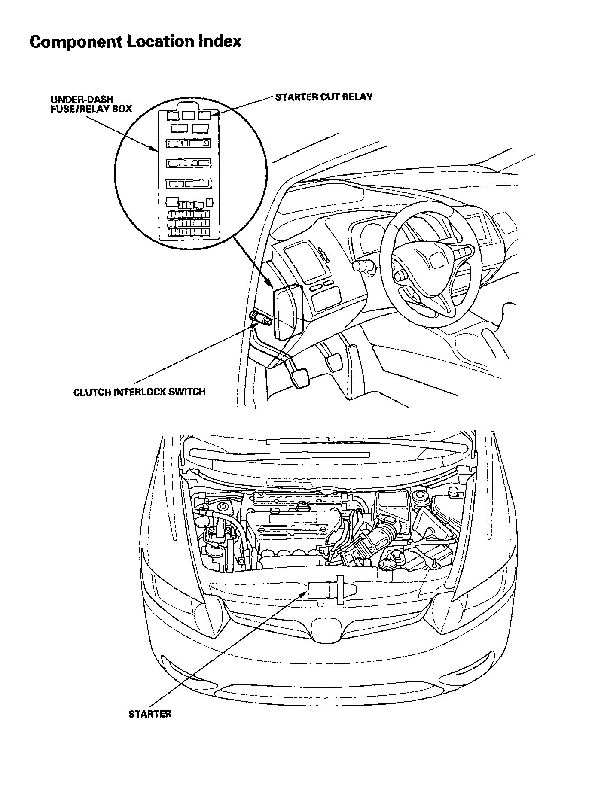

Operation CHARM
: Car repair manuals for everyone.
Home
>>
Honda
>>
2007
>>
Civic Si L4-2.0L
>>
Repair and Diagnosis
>>
Starting and Charging
>>
Sensors and Switches - Starting and Charging
>>
Clutch Switch
>>
Locations
Clutch Switch: Locations
73. Under Left Side of Dash (M/T):

Starting System Component Location Index:
